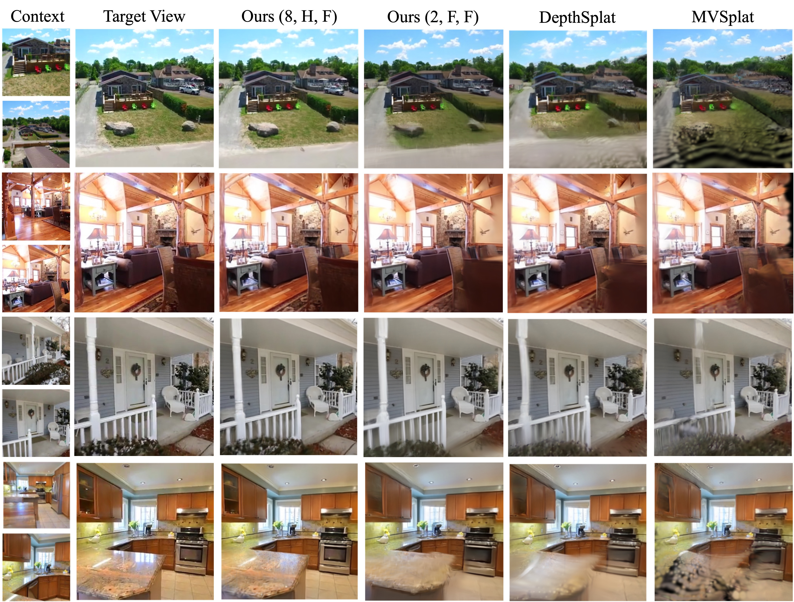

Feed-forward 3D modeling has emerged as a promising approach for rapid and high-quality 3D reconstruction. In particular, directly generating explicit 3D representations, such as 3D Gaussian splatting, has attracted significant attention due to its fast and high-quality rendering, as well as numerous applications. However, many state-of-the-art methods, primarily based on transformer architectures, suffer from severe scalability issues because they rely on full attention across image tokens from multiple input views, resulting in prohibitive computational costs as the number of views or image resolution increases.
Toward a scalable and efficient feed-forward 3D reconstruction, we introduce an iterative Large 3D Reconstruction Model (iLRM) that generates 3D Gaussian representations through an iterative refinement mechanism, guided by three core principles: (1) decoupling the scene representation from input-view images to enable compact 3D representations; (2) decomposing fully-attentional multi-view interactions into a two-stage attention scheme to reduce computational costs; and (3) injecting high-resolution information at every layer to achieve high-fidelity reconstruction. Experimental results on widely used datasets, such as RE10K and DL3DV, demonstrate that iLRM outperforms existing methods in both reconstruction quality and speed.
Notably, iLRM exhibits superior scalability, delivering significantly higher reconstruction quality under comparable computational cost by efficiently leveraging a larger number of input views.
Results on the DL3DV dataset using 32 input images with a resolution of 512×960.

Our method decouples scene representation from input-view images, enabling efficient computation and compact 3D reconstruction. The example above uses half-resolution views, significantly reducing the attention cost while maintaining high-quality reconstruction.
We compare our method with the state-of-the-art methods on the DL3DV dataset. Both methods utilize 12 input images with a resolution of 512x960. We also show the encoding time and memory consumption of each method. Note that, our method generates only 1/4 Gaussians compared to the baseline method.

We compare our method with the state-of-the-art methods on the DL3DV dataset. Both methods utilize 24 input images with a resolution of 256x448. We also show the encoding time and memory consumption of each method. Note that, our method generates only 1/4 Gaussians compared to the baseline method.

We compare our method with the state-of-the-art methods on the RealEstate10K dataset with various numbers of input images.
@article{GenerativeDensification,
title={Generative Densification: Learning to Densify Gaussians for High-Fidelity Generalizable 3D Reconstruction},
author={Nam, Seungtae and Sun, Xiangyu and Kang, Gyeongjin and Lee, Younggeun and Oh, Seungjun and Park, Eunbyung},
journal={arXiv preprint arXiv:2412.06234},
year={2024}
}